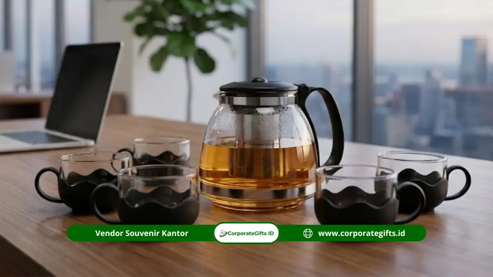

Corporate Gifts ID - Dalam ekosistem bisnis modern, cinderamata perusahaan kini mengalami transformasi besar dari sekadar barang pajangan seremonial menjadi produk fungsional bernilai guna harian. Souvenir tea set kantor adalah paket cendera mata berupa teko penyeduh dan cangkir elegan bertema kerja profesional yang digunakan perusahaan untuk apresiasi karyawan, promosi merek berkelanjutan, serta penguatan relasi bisnis B2B.
Produk ini semakin banyak dipilih oleh tim procurement dan human resources karena sifatnya yang berkelas, fungsional, tahan lama, serta mudah disesuaikan (customized) dengan identitas visual perusahaan. Terlebih lagi, ritual minum teh dan kopi telah menjadi bagian tak terpisahkan dari budaya kerja dan pertemuan bisnis sehari-hari di ruang kantor.
Poin Kunci Souvenir Tea Set Kantor:
- Fungsi Praktis Nyata: Digunakan langsung untuk menyeduh teh hangat saat jam kerja maupun menjamu tamu korporasi.
- Daya Ingat Merek Tinggi (Brand Recall): Logo perusahaan yang dicetak pada teko dan cangkir akan terlihat setiap hari tanpa perlu biaya iklan tambahan.
- Fleksibilitas Desain: Tersedia dalam varian keramik minimalis, kaca borosilikat tahan panas dengan saringan infuser, hingga porselen mewah beraksen emas.
- Kemasan Eksklusif: Dikemas rapi dalam hardbox bermagnet atau kotak kayu premium lengkap dengan busa pengaman benturan.
Menurut riset industri Promotional Products Association International (PPAI), produk promosi yang memiliki nilai guna harian tinggi dan daya tahan fisik lama mampu menghasilkan retensi ingatan merek hingga 85% lebih tinggi dibandingkan souvenir sekali pakai. Tren ini menjadikan kategori souvenir kantor dan perlengkapan meja kerja elegan seperti tea set sebagai aset investasi relasi yang sangat strategis.
Apa Itu Souvenir Tea Set Kantor?
Souvenir tea set kantor adalah satu set perlengkapan minum teh terpadu yang dirancang dengan estetika modern untuk melengkapi meja kerja eksekutif, ruang rapat (meeting room), maupun area pantry kantor. Set ini umumnya terdiri dari:
- Teko Penyeduh (Teapot / Infuser): Berbahan kaca borosilikat bening tahan panas tinggi atau keramik bermotif, dilengkapi saringan baja tahan karat (SUS304) untuk daun teh herbal.
- Cangkir Serasi (Cups / Mugs): Dua hingga empat cangkir berkapasitas 150-250 ml dengan pegangan ergonomis atau lapisan silikon pelindung panas.
- Tatakan atau Nampan Mini (Tray): Berbahan kayu bambu alami atau keramik senada untuk menjaga kebersihan meja kerja.
- Kotak Kemasan Hadiah (Hardbox Packaging): Box kustom bertutup magnet dengan lapisan busa die-cut presisi agar aman saat proses transportasi.
Mengapa Perusahaan Memilih Souvenir Tea Set Kantor?
Ada beberapa alasan mendasar mengapa cinderamata tea set kini semakin diminati perusahaan papan atas:
1. Nilai Fungsional yang Nyata
Berbeda dengan plakat kayu atau piala akrilik yang hanya berdebu di lemari pajangan, tea set dipakai aktif setiap hari. Penerima cinderamata akan langsung merasakan manfaat nyata dari hadiah yang diberikan perusahaan.
2. Kesan Elegan dan Penuh Perhatian
Menghadiahkan tea set mencerminkan kepedulian perusahaan terhadap kesejahteraan (wellness) dan kenyamanan kerja penerima. Minum teh di sela kesibukan kerja dipercaya membantu meredakan stres dan meningkatkan fokus kerja.
Kapan Waktu Tepat Memberikan Souvenir Tea Set Kantor?
Souvenir tea set sangat fleksibel dan dapat dialokasikan untuk berbagai momen penting perusahaan, baik untuk target internal maupun eksternal:
- Momen Hari Jadi Perusahaan (Company Anniversary): Sebagai cinderamata peringatan milad perusahaan untuk jajaran direksi, tamu VIP, dan mitra strategis.
- Penghargaan Masa Kerja Karyawan (Milestone Recognition): Simbol apresiasi tulus atas loyalitas karyawan yang telah mengabdi selama 5, 10, atau 15 tahun.
- Serah Terima Jabatan & Pisah Sambut: Hadiah perpisahan atau penyambutan pejabat baru yang sarat makna penghormatan.
- Penutupan Kerja Sama Proyek (Project Closing Deal): Bingkisan apresiasi kemitraan bisnis setelah penandatanganan nota kesepahaman (MoU).
- Hampers Akhir Tahun dan Hari Raya: Alternatif bingkisan eksklusif selain kue kering yang dapat dipadukan dalam paket hampers perusahaan.

Set teko kaca borosilikat tahan panas dan cangkir minimalis yang sangat serasi diletakkan di ruang rapat kantor modern.
Manfaat Strategis Tea Set bagi Branding Perusahaan
Memberikan tea set kantor bukan sekadar tindakan ramah tamah, melainkan sarana pemasaran pasif (passive marketing) dengan dampak jangka panjang:
- Paparan Logo Tanpa Henti: Setiap kali teko diisi air panas dan cangkir disuguhkan kepada rekan kerja atau tamu kantor, logo perusahaan Anda terpampang nyata di hadapan mereka.
- Meningkatkan Kredibilitas Merek: Cinderamata yang berbobot dan dirancang estetik membangun persepsi bahwa perusahaan Anda menghargai kualitas tinggi dan profesionalisme.
- Mendukung Gaya Hidup Sehat (Corporate Wellness): Kampanye mengonsumsi teh hijau atau seduhan herbal herbal alami memperkuat citra perusahaan yang peduli pada kesehatan tim kerja.
Tabel Komparasi Material & Kisaran Harga Tea Set
Berikut adalah perbandingan material utama tea set kantor beserta kisaran biaya dan peruntukannya:
| Tipe Material | Karakteristik & Kelebihan | Estimasi Harga (per set) | Rekomendasi Acara |
|---|---|---|---|
| Keramik Stoneware | Tebal, kokoh, tahan gores, sablon decal warna permanen | Rp75.000 - Rp125.000 | Apresiasi Karyawan, Souvenir Raker |
| Kaca Borosilikat | Transparan modern, tahan panas mendidih, ada saringan infuser | Rp120.000 - Rp185.000 | Meeting Bisnis, Hadiah Klien Eksekutif |
| Bone China / Porselen | Ringan, sangat halus, kilau mewah, aksen emas/silver | Rp200.000 - Rp350.000+ | Cinderamata VIP Direksi, Mitra Kerja Strategis |
| Travel Tea Set Portable | Kompak, dilengkapi tas travel tahan banting, mudah dibawa dinas | Rp110.000 - Rp170.000 | Souvenir Kick-off Meeting, Outing Kantor |
Keterangan: Estimasi harga di atas merupakan acuan umum untuk pemesanan kuantitas korporat standar (minimal 50 set) dan sudah termasuk cetak logo serta kemasan hardbox.
Panduan Memilih Souvenir Tea Set yang Tepat
Agar pengadaan tea set berjalan sukses tanpa hambatan, ikuti panduan kurasi praktis berikut:
- Sesuaikan dengan Warna Identitas Perusahaan: Pilih kombinasi warna keramik atau pita kotak kemasan yang senada dengan pedoman warna korporat (corporate brand guidelines).
- Perhatikan Kualitas Kemasan Dalam (Foam Protection): Pastikan setiap cangkir dan teko tertanam aman dalam busa cetak spons atau beludru agar terhindar dari risiko pecah saat pengiriman.
- Pilih Teknik Cetak Logo Tahan Cuci: Gunakan teknik sablon decal bakar dengan suhu tinggi (firing decal) atau cetak grafir laser pada pegangan teko agar logo tidak luntur meskipun dicuci setiap hari.
- Perhitungkan Waktu Produksi (Lead Time): Pembuatan tea set custom logo dan cetak kemasan hardbox bespoke membutuhkan waktu pengerjaan 10 hingga 20 hari kerja. Lakukan pemesanan jauh hari sebelum jadwal acara.
Kesalahan Umum saat Pengadaan Tea Set Korporat
Beberapa kekeliruan yang kerap dialami tim pengadaan antara lain:
- Ukuran Logo Terlalu Mencolok: Menempatkan logo perusahaan berukuran terlampau besar dapat merusak nilai estetika tea set. Logo yang diletakkan elegan di bagian bawah atau sisi samping teko justru memberikan kesan jauh lebih prestisius.
- Mengabaikan Pengujian Sampel Fisik (Dummy Sample): Selalu minta foto atau sampel produk jadi sebelum menyetujui produksi massal guna memastikan akurasi warna dan ketebalan material.
- Tidak Mempertimbangkan Bobot dan Logistik: Tea set keramik memiliki bobot yang cukup berat. Pastikan vendor memiliki opsi ekspedisi kargo darat/laut terpercaya yang dilengkapi asuransi pengiriman.
Tren Souvenir Tea Set Kantor di Tahun 2026
Memasuki tahun 2026, tren desain souvenir tea set korporat mengarah pada beberapa inovasi menarik:
- Nuansa Warna Monokrom & Pastel Lembut: Dominasi warna matte black, sage green, krem netral, dan putih mutiara yang memberikan sentuhan Scandinavian minimalis.
- Kemasan Ramah Lingkungan (Eco-Friendly Hardbox): Penggunaan kertas daur ulang bersertifikasi FSC dan nampan bambu yang sejalan dengan inisiatif keberlanjutan (ESG) korporat.
- Paket Kombinasi Teh Artisan Organik: Memadukan tea set dengan tabung teh daun artisan khas nusantara (seperti teh melati, earl grey, atau chamomile) dalam satu gift box terpadu.
Kesimpulan
Souvenir tea set kantor adalah solusi cinderamata cerdas yang memadukan keanggunan visual, fungsionalitas harian, dan daya tahan promosi jangka panjang. Baik diperuntukkan bagi perayaan hari jadi perusahaan, apresiasi karyawan berprestasi, maupun hadiah kemitraan klien VVIP, tea set mampu merefleksikan penghormatan tertinggi dari brand Anda.
Tertarik merancang paket souvenir tea set custom logo dengan kemasan eksklusif untuk acara kantor Anda? Diskusikan kebutuhan Anda bersama tim spesialis kami di CorporateGifts.ID untuk mendapatkan rekomendasi model dan estimasi biaya terbaik.